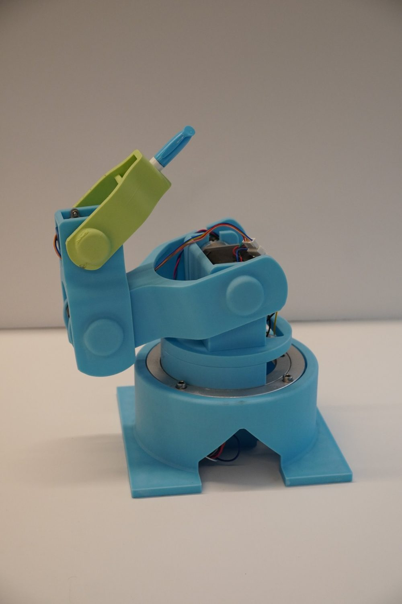
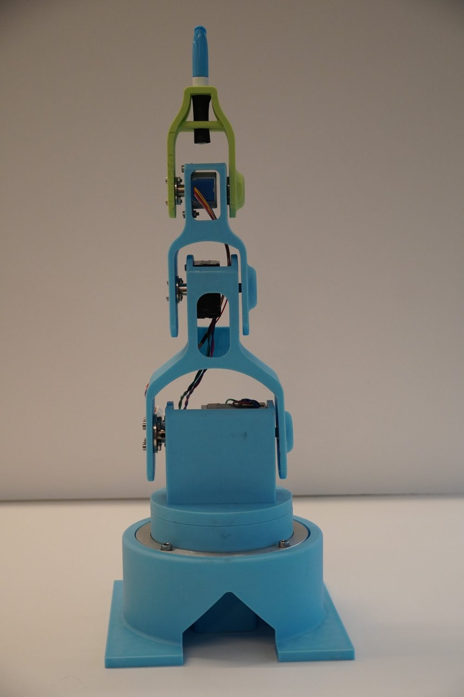
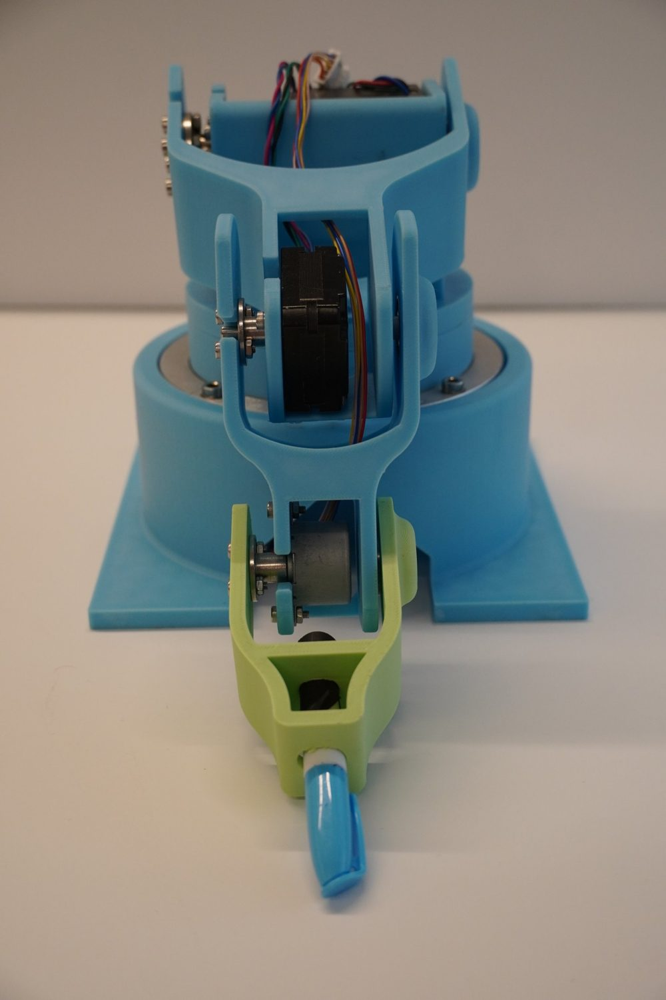
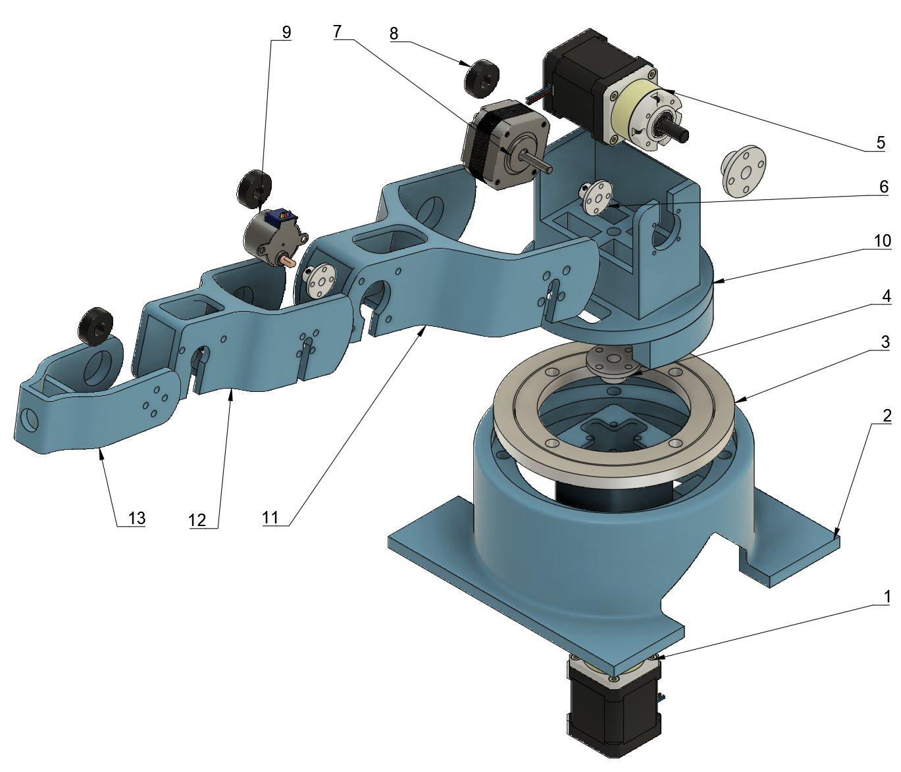
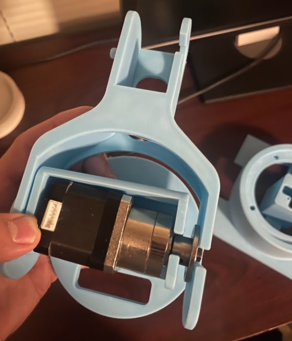
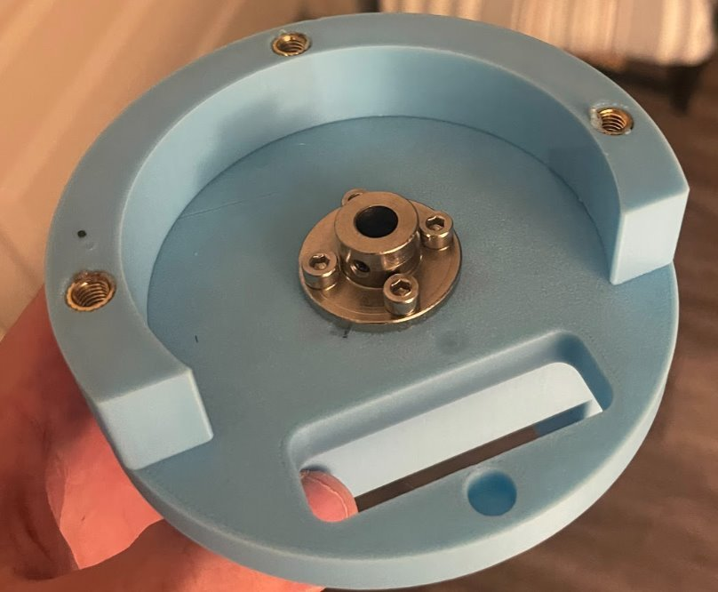
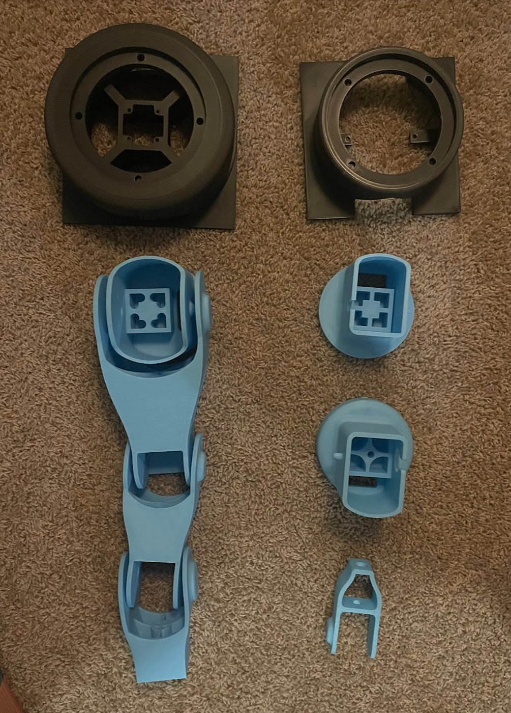
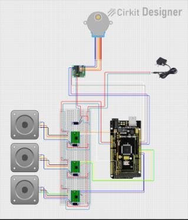
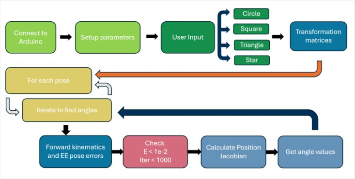
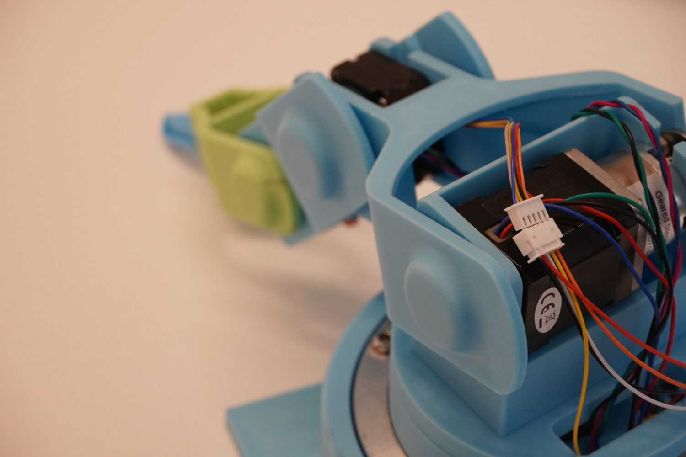

TRACI, short for Trigonometric Robotic Automation for Circle Induction, is a four-degree-of-freedom desktop robotic arm that traces paths on a plane. We built it to explore the precision, kinematics, and control behind medical robots.
- 4 DOFAll revolute joints, every link 3D printed
- 4 stepper motorsTwo NEMA 17 planetary gear, one NEMA 17, one 28BYJ-48
- MATLAB + Arduino MegaResolved-rates control sent over serial in batches of 50 poses
- Draws a circleAutonomously, from a shape and size typed into MATLAB



Why build it
Medical robots need exceptional precision, because small deviations can affect tissue integrity and patient safety. They also have to capture a clinician’s intended motion while suppressing tremor and outside disturbances.
Our goal was a compact robot that follows a predefined trajectory accurately. Building one let us apply forward and inverse kinematics, iterate on control strategies, and see how small design decisions change system performance.
Design and fabrication
Every joint is revolute and driven by a stepper motor. We chose each motor from torque calculations for worst-case loading, and placed the heaviest motors near the base, close to the central axis of Joint 1, to cut inertial load.
All links, motor mounts, and the base are 3D printed for fast iteration. Printed parts can flex, so each joint adds bearings to reduce play, flange couplings, and heat-set inserts so threaded connections stay tight under repeated motor operation.
The base is a modular, multi-stage assembly that fits the large motors and comes apart for maintenance and upgrades. A repurposed rotary bearing mounted directly to the base lets the whole arm rotate smoothly on the first motor.




Electronics
A single Arduino Mega sends step and direction signals to all four motors. Motors 1 to 3 run on A4988 drivers with 1/16 microstepping. Motor 4, which moves the drawing end effector, uses a ULN2003 driver for its 28BYJ-48 stepper. Everything runs from a 12 V, 2 A supply, with current limits set on each driver from the motor specifications.
Wires are extended with soldered connections and routed through the center of each arm segment, so nothing snags and the full range of motion stays available. The next step is replacing the breadboard with a custom PCB or prototyping board to cut signal noise.

Software and control
MATLAB handles the high-level control. The user types a shape and size, such as a circle, square, triangle, or star, and the code lays the target points out in world coordinates centered at the base of Joint 1. For each point it computes forward kinematics from the DH parameters, measures the position error, and uses a resolved-rates loop to find joint angles. The loop stops when the error drops below 1e-2 or after 1000 iterations. Near singularities it switches to a damped, singularity-robust pseudoinverse.
The finished path goes to the Arduino as joint angles at 115200 baud, in batches of 50 poses. The Arduino steps through each pose motor by motor, using speeds and accelerations chosen from each motor’s torque curve, then tells MATLAB when the batch is done.
| Link | θ (rad) | d (mm) | a (mm) | α (rad) |
|---|---|---|---|---|
| 1 | θ1 + π/2 | 150 | 0 | π/2 |
| 2 | θ2 | 0 | 117 | 0 |
| 3 | θ3 | 0 | 78 | 0 |
| 4 | θ4 | 0 | 114 | 0 |

Challenges and solutions
Assembly
The first build would not hold its poses. We swapped Motor 2 for a much higher-torque planetary gear motor, moved it closer to the central axis, and shortened the links.
Circuitry
Drivers burned out or lost holding torque in some poses. By testing earlier poses we traced it to too much or too little current, then fine-tuned the current limit on each driver.
Integration
Each part of the stack worked alone, but the whole system was too slow. We sent angles in batches, tuned accelerations and maximum speeds, tuned resolved-rates parameters to need fewer iterations, and smoothed the joint paths.
Results
After several rounds of fabrication, circuit work, and parameter tuning, TRACI draws a circle on its own from a command typed into MATLAB. It also draws on a plane tilted 45°.
Limitations and next steps
- The circle takes a long time to draw, and it comes out slightly oval. Adding encoders would improve both.
- We have only tested a circle on the hardware. The square, triangle, and star are still to test.
- Lighter materials and stronger motors would improve precision, and extra degrees of freedom and prismatic joints would bring it closer to clinical robots.
